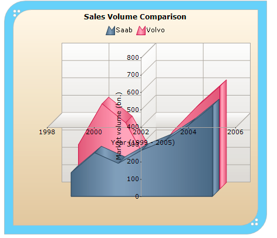

Essential Chart allows the X and Y axis to intersect at a desired point. The X and Y axis will intersect at a point based on the value specified in the X axis Crossing property and the Y axis Crossing property respectively.
Use Case Scenarios
This feature will be useful to customize the location of primary axes from default location, when you want to add huge number of negative and positive points in the chart.
Properties
|
Property |
Description |
Type |
Data Type |
Reference links |
|
Crossing |
Specifies the point of intersect for X and Y axis based on the given data point value. |
Server side |
Double |
NA |
Sample Link
To view a sample:
1. Open the Syncfusion Dashboard.
2. Click the Asp.net drop-down list and select Run Locally Installed Samples.
3. Navigate to Chart samples àChart Axes àCrossing.
Enabling crossing X and Y axis
To enable crossing X and Y axis, specify the Y axis data point value, where you want the X axis to cross, in the X axis Crossing property. Similarly specify the X axis data point value, where you want the Y axis to cross, in the Y axis Crossing property. The following code illustrates this:
Note: Crossing isn’t supported while zooming the chart in the X axis or Y axis.
|
[C#]
this.ChartWebControl1.PrimaryXAxis.Crossing=400; this.ChartWebControl1.PrimaryYAxis.Crossing =2002; this. ChartWebControl1.Series3D = true; |
|
[VB] Me.ChartWebControl1.PrimaryXAxis.Crossing = 400 Me.ChartWebControl1.PrimaryYAxis.Crossing = 2002 Me.ChartWebControl1.Series3D = True |
